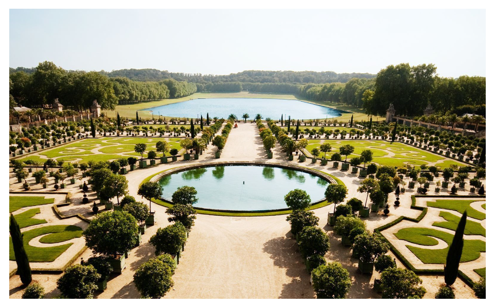

西方古典园林以意大利文艺复兴园林、法国古典主义园林为代表。西方古典林园的诞生和透视绘画的发明深度绑定：画家发现单点透视可以在平面上制造空间纵深感，建筑师、造园师直接把这套理论应用在园林设计中。

核心造园元素：主中轴线、整形树篱、几何花坛、喷泉、雕塑。人为修剪树木花草，让自然植物服从几何规则，体现人对自然的理性改造。
以理性秩序支配自然。人们认为自然本身杂乱无序，需要用几何、对称的形式加以规整，彰显人的理性力量，也象征王权与权威。
运用单点透视绘画原理。以宫殿建筑作为画面消失点，沿着中轴线，树木、水池、花坛向远方汇聚。大量17世纪版画专门记录凡尔赛园林，这类版画就是园林绘画，用来向贵族展示园林宏大透视效果。
整体对称开阔，主次分明。站在起点，一眼就能望见中轴线尽头，空间完全敞开，没有藏景，追求宏伟、壮丽的视觉冲击。